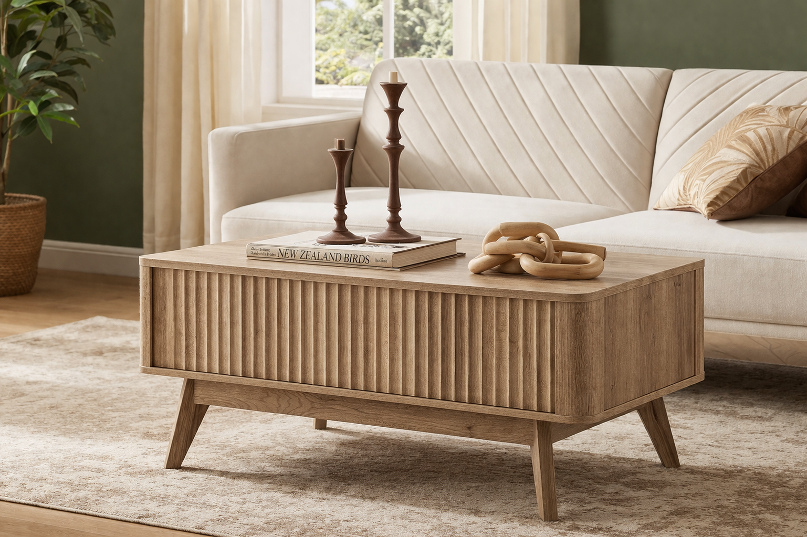

Image slot
The coffee table that makes a room feel calmer
Easy Favorite
Looks More Expensive Than It Is
The coffee table that makes a room feel calmer
A soft wood coffee table settles the center of a room and makes the whole space feel warmer almost immediately.